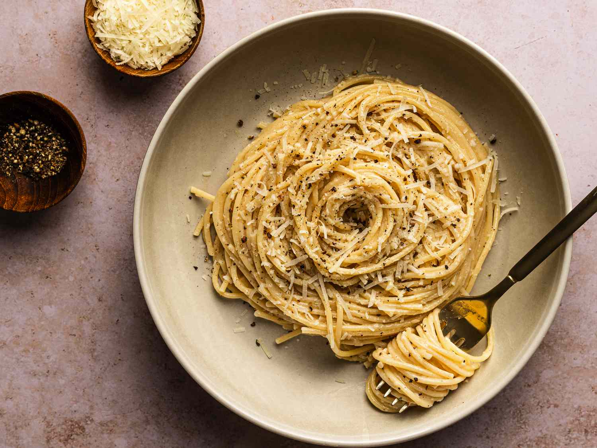

This ancient dish with Roman origins is regarded as one of the simplest and most satisfying Italian dishes. Cacio e pepe consists of pasta (usually spaghetti), aged Pecorino Romano cheese, salt, and lots of ground black pepper. Since the ingredients are easy to transport and do not spoil easily, it was once the favorite dish of Roman shepherds.
Meal prep time : 15 minutes
Servings : 2